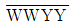
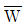
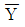

종자산업기사 (2002-08-11 기출문제)
1과목: 종자생산학 및 종자법규
1. 다음 채소 중 대표적인 호암성(암발아성) 발아종자에 속하는 것은?
- 우엉
- 상추
- 호박
- 담배
(정답률: 알수없음)

2. 다음 중 화곡류의 채종 적기는?
- 유숙기
- 황숙기
- 완숙기
- 고숙기
(정답률: 알수없음)
3. 배휴면(胚休眠)을 하는 종자의 휴면타파에 가장 효과적인 방법은?
- 습윤저온처리
- 건조저온처리
- 습윤고온처리
- 건조고온처리
(정답률: 알수없음)
4. 적심이 교잡을 위한 개화기 조절방법으로 쓰일 수 없는 작물은?
- 무
- 배추
- 상추
- 양파
(정답률: 60%)
5. 등숙기의 저온감응이 차대식물의 화아분화에 영향을 미칠수 있는 것은?
- 무
- 가지
- 오이
- 상추
(정답률: 알수없음)
6. 유통종자의 품질표시사항이 아닌 것은?
- 재배상 특히 주의할 사항
- 종자의 수분함량
- 종자의 수량과 품종의 명칭
- 종자의 발아율 및 그 발아보증시한
(정답률: 알수없음)
7. 다음 중 국가보증의 대상이 아닌 것은?
- 농림부장관이 국가품종목록등재대상작물의 종자를 생산하는 경우
- 농림부령으로 정하는 종자산업과 관련된 협회가 국가품종목록등재대상작물의 종자를 생산하는 경우
- 농업협동조합법에 의한 농업협동조합이 국가품종 목록등재대상작물의 종자를 생산하는 경우
- 종자업자가 농림부장관이 정하는 작물의 품종의 종자를 생산· 수출하기 위하여 국가보증을 받고자 하는 경우
(정답률: 알수없음)
8. 다음의 종자 중 양분의 주요 저장기관이 배유(배젖)가 아닌 것은?
- 보리
- 호밀
- 옥수수
- 콩
(정답률: 알수없음)
9. 자식성 화본과 작물 채종포에서 가장 합리적인 관리에 해당하는 것은?
- 발아조건이 유리하게 파종기는 적기보다 4∼5일 지연한다.
- 박파(드물게 파종)를 하여 얼자 발생을 유도한다.
- 재배는 관행에 준하며, 적정 파종을 하여 균일한개화기를 유도한다.
- 종자 생산량을 높이기 위해 관행보다 시비량을 높인다.
(정답률: 알수없음)
10. 성숙도 판단의 기준으로 부적절한 것은?
- 색깔
- 호흡정도
- 관수량, 시비량
- 함유성분의 양
(정답률: 알수없음)
11. 종자내 수분 종류 중에 종자수분 측정시에 포함시키지 않아도 되는 수분 형태는?
- 흡습수
- 결합수
- 화학수
- 자유수
(정답률: 46%)
12. 다음 종자소독 방법 중에 물리적 소독방법이 아닌 것은?
- 훈증소독법
- 건열소독법
- 냉수온탕법
- 태양열 이용
(정답률: 알수없음)
13. 가지종자의 발아는 어느 환경조건하에서 잘 되는가?
- 저온
- 고온
- 변온
- 항온
(정답률: 알수없음)
14. 다음 중 종자발아에 가장 큰 영향을 미치는 것은?
- 산소
- 질소
- 수소
- 메탄
(정답률: 70%)
15. 장류콩의 품종성능 심사에서 평가형질 중 두부수율 평가를 위한 표준품종은?
- 은하콩
- 만리콩
- 검정콩 1호
- 화엄풋콩
(정답률: 알수없음)
16. 채종재배시 주의할 점으로 잘못된 것은?
- 질소비료는 충분히 시용한다.
- 이형주의 도태에 유의한다.
- 지나친 밀식을 피한다.
- 배추과(십자화과) 작물은 격리재배를 한다.
(정답률: 알수없음)
17. 종자산업법에서 규정하고 있는 품종보호요건으로 맞는 것은?
- 일치성
- 신규성
- 적응성
- 유사성
(정답률: 알수없음)
18. 다음의 종자소독 유기약제 중 침투성이 강하고 보호살균제로 주로 보리와 밀의 겉깜부기병과 줄무늬병 방제를 위하여 사용하는 것은?
- 베노람수화제
- 지오람수화제
- 프로라츠유제
- 카보람분제
(정답률: 알수없음)
19. 종자관련국제기구 중 "보증"과 관련된 기구는?
- EEC
- UPOV
- ISTA
- FIS
(정답률: 37%)
20. 벼종자 채종시 원원종포는 이품종으로보터 얼마나 격리 되어야 하는가?
- 1m 이상
- 2m 이상
- 3m 이상
- 5m 이상
(정답률: 알수없음)
2과목: 식물육종학
21. 개화기가 파종 후 100일과 120일 품종간의 잡종후대에서 80일인 개체가 출현하였다. 이에 대한 설명으로 가장 적당한 것은?
- 초우성
- 완전우성
- 불완전우성
- 부분우성
(정답률: 알수없음)
22. 서로 다른 형질을 발현할 수 있는 2쌍의 유전자를 가진 관상용 호박에서 과실의 백색종(

)과 녹색종 (wwyy)의 교배에서
가
에 대하여 상위(상위)에 있다고 한다면 F2에서의 백색종 : 황색종 : 녹색종의 분리비는?- 12:3:1
- 9:6:1
- 1:2:1
- 9:3:4
(정답률: 37%)
23. 유전자원을 수집· 보존해야 할 가장 합당한 이유는?
- 멘델 유전법칙을 확인하기 위함
- 다양한 육종소재로 활용하기 위함
- 야생종을 도태시키기 위함
- 개량종의 보급을 확대시키기 위함.
(정답률: 알수없음)
24. 유전자의 변화가 가장 적은 특성유지 번식방법은?
- 영양번식
- 격리재배
- 원원종 재배
- 보통채종 재배
(정답률: 알수없음)
25. 육종을 위한 변이 작성법으로 부적당한 것은?
- 인공교배
- 방사선 처리
- 춘화처리
- 화학약품 처리
(정답률: 60%)
26. 배추, 양배추에서 F1을 이용하는 가장 큰 목적은?
- 수량증대
- 저항성 증대
- 채종상 유리
- 균일성 및 자식약세방지
(정답률: 70%)
27. 여교잡을 이용하여 유용한 우성유전자를 집적시켜 자식계를 만드는 육종법은?
- 집단육종법
- 수렴육종법
- 혼합육종법
- 계통육종법
(정답률: 알수없음)
28. 육종상 주요 대상이 되는 변이는?
- 유전변이
- 환경변이
- 장소변이
- 일시적변이
(정답률: 알수없음)
29. 농작물 육종에 이용할 목적으로 세계 각국에서 품종을 수집하여 보존하고 있는 것을 ( )이라 한다. ( )안에 알맞는 말은?
- 유전자원
- 야생종
- 재래종
- 장려품종
(정답률: 알수없음)
30. 배수체를 유발하기 위해 콜히친(colchicine) 수용액에 종자를 침지하고자 한다. 적당한 농도는?
- 0.01 ∼ 1.0%
- 1.0 ∼ 10.0%
- 10.0 ∼ 20.0%
- 20 ∼ 30%
(정답률: 60%)
31. 반수체 식물의 생식능력을 임실률로 표시하면 어떻게 되겠는가?
- 0%
- 25%
- 50%
- 100%
(정답률: 알수없음)
32. 유전적 원인에 의한 불임성에 속하는 것은?
- 다즙질 불임성
- 쇠약질 불임성
- 웅성불임성
- 순환적 불임성
(정답률: 알수없음)
33. 다음 형질 중 양적 형질이 아닌 것은?
- 작물의 키
- 꽃의 색
- 열매의 크기
- 잎의 수
(정답률: 알수없음)
34. 요인의 종류가 2 - 3 이고 요인의 수가 많지 않을 때 용되는 시험구의 배치법은?
- 완전임의 배치법
- 난괴법
- 라틴방격법
- 분할시험구법
(정답률: 알수없음)
35. 다음 중 단위결과를 옳게 설명한 것은?
- 하나의 식물체에 하나의 과일이 달리는 현상
- 종자가 생기지 않고 과일이 비대되는 현상
- 하나의 과일 속에 하나의 종자가 생기는 현상
- 과일 속에 수많은 종자가 생기는 현상
(정답률: 80%)
36. 자가불화합성 작물에서 불화합이 일어나는 조합은?
- S2S3 × S1S2
- S1S1 × S2S2
- S1S2 × S3S3
- S1S2 × S1S1
(정답률: 알수없음)
37. 자식성 작물의 신품종 증식단계를 옳게 나타낸 것은?
- 기본식물 → 원원종 → 원종 → 보급종
- 원종 → 원원종 → 기본식물 → 보급종
- 원원종 → 보급종 → 원종 → 기본식물
- 보급종 → 기본식물 → 원종 → 원원종
(정답률: 알수없음)
38. 자연교잡에 의한 품종의 퇴화를 방지하는데 쓰이는 방법은?
- 보존재배법
- 거리격리법
- 종자저장법
- 원종재배법
(정답률: 알수없음)
39. 두 개의 우성유전자가 작용하여 전혀 다른 새로운 형질을 발현케 하는 유전자는?
- 보족유전자
- 중복유전자
- 동의유전자
- 양적유전자
(정답률: 알수없음)
40. F1 채종에 웅성불임성을 이용하지 않는 작물은?
- 양파
- 오이
- 당근
- 고추
(정답률: 알수없음)
3과목: 재배원론
41. 환원성 유해물질이 아닌 것은?
- Fe++
- Mn++
- H2S
- FeS
(정답률: 알수없음)
42. 토양 수분을 측정하는 방법이 아닌 것은?
- 장력계법
- 전기저항법
- 가압상법
- 중성자 산란법
(정답률: 알수없음)
43. 저온 · 장일의 조건이 화성에 필요한 식물에서 저온처리나 장일조건의 환경을 대신할 수 있는 것은 어느 것인가?
- 지베렐린
- 옥신
- 시토키닌
- 에스렐
(정답률: 알수없음)
44. 작물을 일반식물과 구별할 수 있는 특성은?
- 병에 대한 저항성이 강하다.
- 생존경쟁에 있어서 유리하다.
- 특수부분이 잘 발달되어 있다.
- 환경적응성이 뛰어나다.
(정답률: 알수없음)
45. 다음 중 속효성인 비료로 짝지은 것은?
- 요소 · 황산암모늄
- 깻묵 · 퇴비
- 중과린산석회 · 구비
- 염화칼륨 · 깻묵
(정답률: 알수없음)
46. 다음 목초 중에서 하고발생이 가장 심한 것은?
- 라이그라스
- 티머시
- 오오쳐드그라스
- 화이트클로버
(정답률: 70%)
47. 다음 작물의 종류에서 세계적으로 가장 많은 비율을 차지하는 작물은?
- 식용작물
- 사료작물
- 채소작물
- 섬유작물
(정답률: 알수없음)
48. 재배식물이 그 선조인 야생식물에 비해 환경적응성이 약하다고 하는데, 그 원인으로 가장 적당한 것은?
- 병 저항성 유전자의 축적
- 환경적응성 관련 유전자의 소실
- 유전자의 상호작용
- 유전자의 재조합
(정답률: 알수없음)
49. 벼가 냉해를 받아 화분방출과 수정이 저해되었을 때, 이를 어떤 종류의 냉해라고 하는가?
- 지연형냉해
- 병해형냉해
- 장해형냉해
- 복합형냉해
(정답률: 알수없음)
50. 다음 중 산성토양에 대한 작물의 적응성이 가장 강한 작물로 되어 있는 것은?
- 밀· 조· 고구마
- 보리· 클로버· 양배추
- 벼· 귀리· 감자
- 알팔파· 자운영· 콩
(정답률: 알수없음)
51. 벼 도복의 대책을 가장 바르게 설명한 것은?
- 질소를 다량 시용한다.
- 만기추비를 다량으로 시용한다.
- 직파재배보다 이앙재배를 한다.
- 밀식을 한다.
(정답률: 알수없음)
52. 조파조식으로 영양생장기간을 연장하여 증수하고자 할 때 알맞는 기상생태형은?
- blt 형
- Blt 형
- blT 형
- bLt 형
(정답률: 알수없음)
53. 식물체내에 함유된 탄수화물과 질소의 비율이 개화와 결실을 유도한다는 이론은?
- 일장효과
- G - D균형
- C - N율
- T/R 율
(정답률: 알수없음)
54. 방사성동위원소의 이용에 관한 설명으로 적절하지 않은 것은?
- 식물체내의 에너지원으로 이용
- 표지화합물로 작물의 생리연구에 이용
- 영양기관의 장기저장에 이용
- 돌연변이를 유발시켜 육종에 이용
(정답률: 84%)
55. 다음 중 내건성 작물의 특성은?
- 세포액의 삼투압이 낮다.
- 원형질의 점성이 높다.
- 표면적이 크다.
- 기공이 크다.
(정답률: 알수없음)
56. 다음 중 버어널리제이션의 효과를 감소시키는 조건은?
- 건조처리
- 탄수화물의 공급
- 저온처리
- 산소의 공급
(정답률: 알수없음)
57. 토양 유기물의 기능이 될 수 없는 것은?
- 다량원소와 미량원소를 공급한다.
- 암석분해를 억제한다
- 대기 중에 이산화탄소를 공급한다.
- 미생물의 번식을 조장한다.
(정답률: 60%)
58. 다음 식물 중 장일성식물은 어느 것인가?
- 도꼬마리
- 보리
- 나팔꽃
- 국화
(정답률: 알수없음)
59. 잎의 노화촉진과 눈의 휴면을 유도하는 식물호르몬은?
- 아브시스산(abscisic acid)
- 오옥신(auxin)
- 시토키닌(cytokinin)
- 에틸렌(ethylene)
(정답률: 50%)
60. 논토양의 탈질현상을 방제하기 위하여 암모니아태 질소비료를 주는 가장 적합한 때는?
- 이앙기
- 정지하기 전
- 최고분얼기
- 유수분화기
(정답률: 알수없음)
4과목: 식물보호학
61. 토양수분의 이상에 의해서 발생되는 병해는?
- 사과나무 고무병
- 토마토 배꼽썩음병
- 감자 검은빛속썩음병
- 사과나무 수심병
(정답률: 30%)
62. 관행적인 방법으로 살충제인 A 유제 50%를 500배로 희석해서 10a 당 100 L를 살포하고자 할 때, 그 약제의 소요량은?
- 50cc
- 100cc
- 200cc
- 400cc
(정답률: 25%)
63. 다음 중 해충 방제법의 설명으로 옳지 않은 것은?
- 내충성 품종을 이용한다.
- 포장 주위에 잡초를 유지하여 해충을 유인한다.
- 살충제를 살포한다.
- 기주범위가 좁은 해충에는 윤작이 효과적이다.
(정답률: 알수없음)
64. 곤충 사육의 목적과 가장 거리가 먼 것은?
- 생활사를 조사하기 위하여
- 연대, 분포, 발상지를 조사하기 위하여
- 시험용 공시충을 다량 얻기 위하여
- 분류학적 위치를 조사하기 위하여
(정답률: 알수없음)
65. 일반적으로 식물병원곰팡이의 포자 발아에 가장 큰 영향을 미치는 것은 다음 중 어느 것인가?
- 습도
- 낮의 길이
- 밤의 온도
- 식물의 나이
(정답률: 알수없음)
66. 다음 중 전신적 병징에 속하는 것은?
- 혹의 형성
- 탄저병
- 시들음병
- 가지마름병
(정답률: 알수없음)
67. 작물의 병해충을 방제하기 위하여 윤작을 하였다면 어느 방제법에 해당되는가?
- 생물적 방제법
- 물리적 방제법
- 화학적 방제법
- 경종적 방제법
(정답률: 알수없음)
68. 병원체가 식물체를 침입할 때 사용하는 일반적인 무기가 아닌 것은?
- 효소
- 호르몬
- 독소
- 기계적인 힘
(정답률: 알수없음)
69. 지구상에서 곤충이 번성하게된 원인 중 타탕하지 않는 것은?
- 날개를 지녔다.
- 외골격이 발달하였다.
- 대형종으로 진화하였다.
- 냉혈을 가졌다.
(정답률: 알수없음)
70. 벼 도열병의 발병 유인에 합당하지 못한 것은?
- 식물 병원균
- 저온
- 과습
- 질소비료 과다 시비
(정답률: 알수없음)
71. 다음 중 다년생 잡초는?
- 올방개
- 나도냉이
- 갯질경
- 둑밭소리쟁이
(정답률: 60%)
72. 다음 중 잡초발생량이 가장 많은 논은?
- 담수직파재배 논
- 건답직파재배 논
- 무논골뿌림재배 논
- 어린모 기계이앙재배 논
(정답률: 알수없음)
73. 벼 줄무늬잎마름병을 매개하는 곤충은?
- 벼멸구
- 흰등멸구
- 애멸구
- 끝동매미충
(정답률: 알수없음)
74. 다음 중 불완전변태를 하는 곤충 목(目)은?
- 노린재목
- 딱정벌레목
- 파리목
- 벌목
(정답률: 알수없음)
75. 감자역병의 병원균이 기주에 침입하여 감염하기에 가장 알맞은 기상 조건은?
- 저온 건조할 때
- 저온 다습할 때
- 고온 건조할 때
- 고온 다습할 때
(정답률: 알수없음)
76. 농약의 보관상 유의해야 할 사항으로 잘못된 것은?
- 냉암소에 보관한다.
- 건조한 곳에 보관한다.
- 관리하기 편리하도록 모든 약제는 한곳에 모아 보관한다.
- 인화의 위험이 있으므로 불을 피하여 보관한다.
(정답률: 알수없음)
77. 농약을 제제의 형태별로 볼 때 어독성이 제일 강하게 나타나는 것은 어떤 형태의 제품인가?
- 유제
- 수화제
- 분제
- 입제
(정답률: 알수없음)
78. 액체인 농약의 경구 독성이 고독성을 나타내는 정도는?
- LD50 ＜ 5
- LD50 ＜ 20
- LD50 = 5∼50
- LD50 = 20∼200
(정답률: 알수없음)
79. 제초제의 구비조건으로 적절하지 못한 것은?
- 환경변동에 대한 안정성이 높아야한다.
- 작물 선택성이 낮아야한다.
- 저독성이며 인축과 환경에 대한 위험성이 적어야한다.
- 가격이 저렴해야 한다.
(정답률: 80%)
80. 잡초문제의 특이성에 해당되지 않는 사항은?
- 피해 특성이 생산 활동 억제이다.
- 정체성을 가진다.
- 진전이 급진성이다.
- 방제 개념은 피해수준을 근거로 한다.
(정답률: 알수없음)